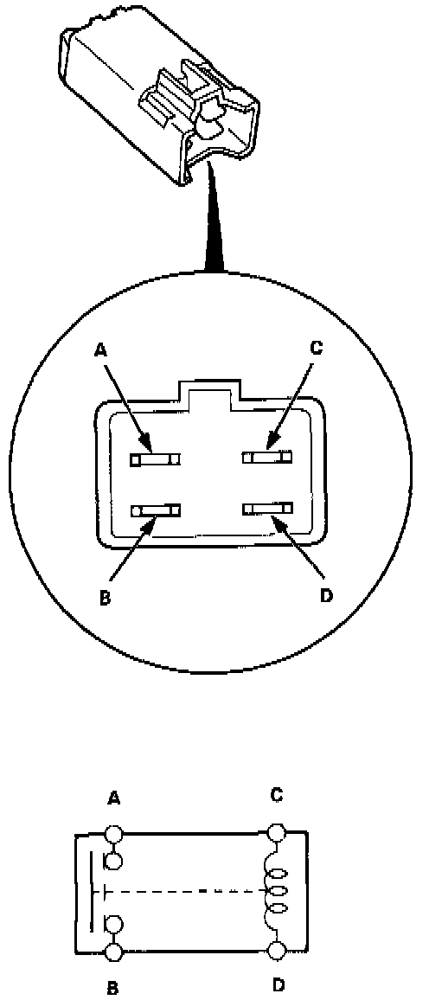
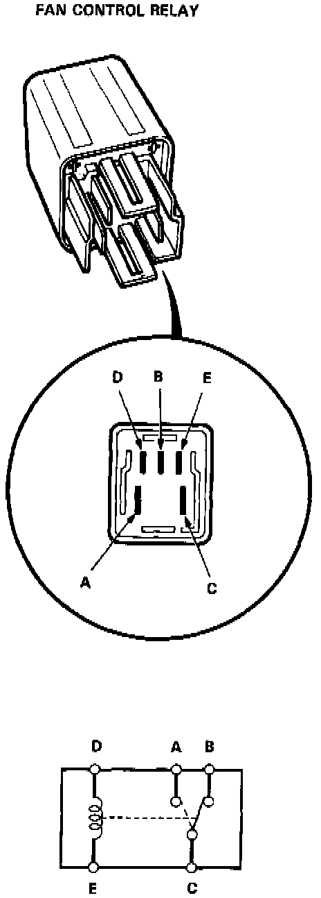

Automatic Climate Control

RADIATOR AND CONDENSER FAN RELAYS (4 PIN / A-TYPE)
There should be continuity between the A and B terminals when the battery is connected to the C and D terminals.
There should be no continuity when the battery is disconnected.

COOLING FAN CONTROL RELAY (5 PIN / C-TYPE)
There should be continuity between the A and C terminals when the battery is connected to the D and E terminals. There should be no continuity when the battery is disconnected.